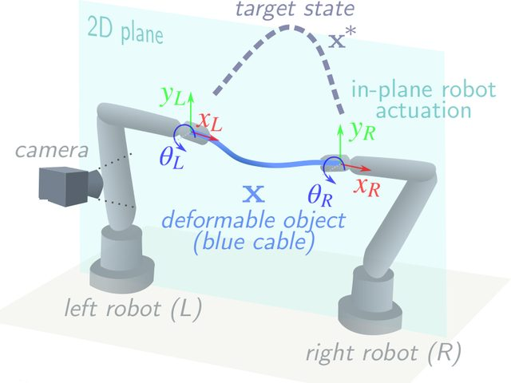
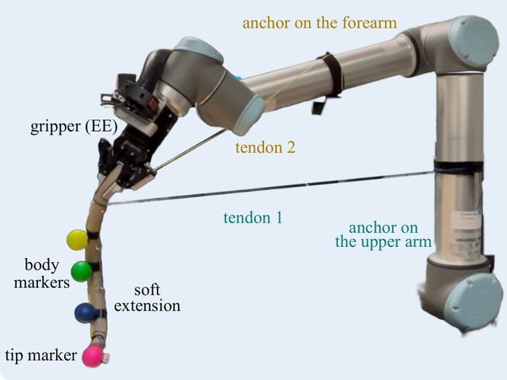
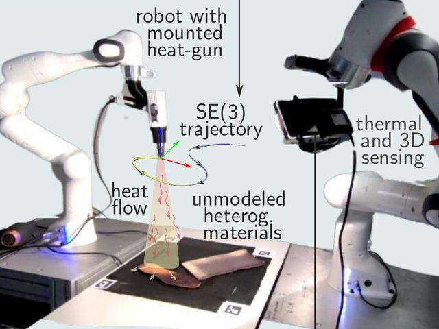
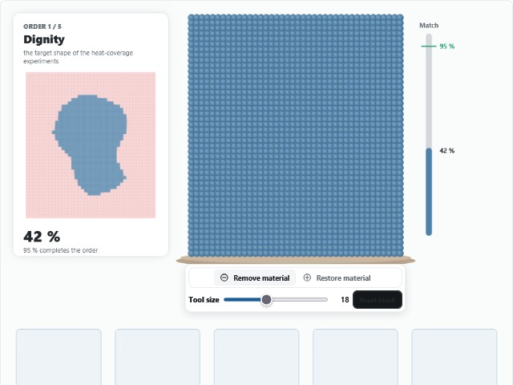
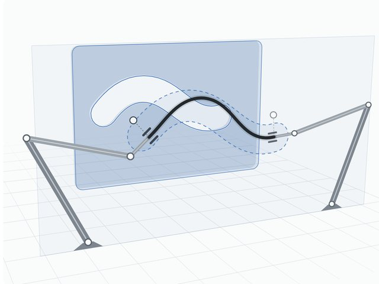
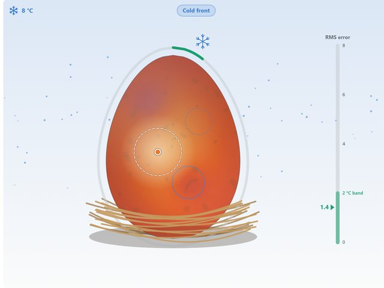
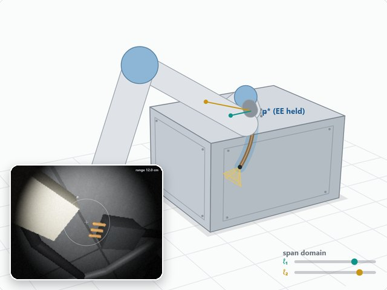

I. Cuiral-Zueco and G. López-Nicolás, “Time Consistent Surface Mapping for Deformable Object Shape Control,” IEEE Transactions on Automation Science and Engineering, vol. 22, pp. 11099–11111, 2025. doi: 10.1109/TASE.2025.3529180.

Ignacio Cuiral-Zueco
Assistant Professor · University of Zaragoza
My research addresses the robotic manipulation of deformable objects, in particular shape control: estimating the shape of an object from sensor data and computing the robot motions that drive it to a target shape.
I received my PhD from the University of Zaragoza in 2024 and was then a postdoctoral researcher at Institut Pascal (Clermont Auvergne INP), France. The thesis received three awards (CEA, SEIDROB–SPR and the University of Zaragoza) and was a finalist for the Georges Giralt PhD Award.
ignaciocuiral@unizar.es Google Scholar ORCID DBLP GitHub LinkedIn
News
-
2026
Joining the University of Zaragoza as Assistant Professor
I’m finishing my postdoc at Clermont (CA-INP), where I’ve been lucky to work with Prof. Youcef Mezouar and a great group of colleagues. John, Bastien, Edoardo, and everyone else, thanks for making me feel so welcome (and for the raclette plans!). It’s been an excellent experience, with some exciting research from this time hopefully coming out soon.
I’m now joining the University of Zaragoza faculty as an Assistant Professor (Profesor Ayudante Doctor), based at EUPT and working with the ISA group within the Department of Computer Science and Systems Engineering (DIIS).
Very grateful for the experience, and looking forward to what comes next!
-
2026
Engineering and Architecture PhD Thesis Excellence Award, University of Zaragoza.
-
2026


Paper presented at ERF 2026
I presented our paper "The Language of Deformation: Semantic Failure Analysis as a Prerequisite for Dexterous Manipulation of Deformable Objects" at ERF 2026 in Stavanger, Norway, coauthored with David Hardman, Michele Pierallini and Erfan Shahriari. We met last year as finalists for the Georges Giralt PhD Award, each from a different institution in Europe, and ended up writing a paper together. A great example of what conferences like ERF are for :)
This work was partly funded by the EU through the REMAIN SUDOE project.
-
2025

Best Robotics PhD Thesis Award, Spanish Committee of Automatic Control (CEA).
-
2025
Best Iberian Robotics PhD Thesis Award, awarded by the Spanish Society for Research and Development in Robotics (SEIDROB) and the Portuguese Robotics Society (SPR).
-
2025
Georges Giralt PhD Award finalist: euRobotics award for the best PhD theses in robotics defended in Europe; selected as a finalist among more than 50 candidates and presented at the European Robotics Forum 2025.
-
2025

Invited visiting scholar
ELLIIT Focus Period 2025 on robot learning, Lund University, Sweden. Seminar on data-driven deformable object manipulation, November 2025.
CV
Academic positions
- 2026–presentAssistant Professor (Profesor Ayudante Doctor), EUPT, ISA group, Department of Computer Science and Systems Engineering (DIIS), University of Zaragoza, Spain.
- 2025–2026Postdoctoral Researcher, CA-INP, Institut Pascal, France.
- 2024–2025Adjunct Professor, Systems Engineering and Automation, University of Zaragoza.
- 2024–2025Researcher N3, European project DeFORMS, University of Zaragoza.
- 2020–2024Researcher N3, project FROSCAT, University of Zaragoza.
- 2019–2020Researcher N4, European project COMMANDIA, University of Zaragoza.
Education
- 2019–2024PhD in Systems Engineering and Computer Science, University of Zaragoza. Thesis: Shape Control of Deformable Objects (International Mention, Cum Laude). Full text
- 2017–2019MSc in Industrial Engineering, University of Zaragoza. Thesis: RGB-D Visual SLAM for Manipulator Control in Deformable Environments (Distinction).
- 2013–2017BSc in Industrial Technologies Engineering, University of Zaragoza. Thesis: Stereo Visual SLAM for Medical Endoscopy (Distinction).
Awards
- 2026Engineering and Architecture PhD Thesis Excellence Award, University of Zaragoza.
- 2025Best Robotics PhD Thesis Award, Spanish Committee of Automatic Control (CEA).
- 2025Best Iberian Robotics PhD Thesis Award, awarded by the Spanish Society for Research and Development in Robotics (SEIDROB) and the Portuguese Robotics Society (SPR).
- 2025Georges Giralt PhD Award finalist: euRobotics award for the best PhD theses in robotics defended in Europe; selected as a finalist among more than 50 candidates and presented at the European Robotics Forum 2025.
Research stays and invited talks
- Mar 2026European Robotics Forum (ERF), Stavanger, Norway. Paper presentation.
- Nov 2025Invited visiting scholar, ELLIIT Focus Period, Lund University, Sweden. Seminar on data-driven deformable object manipulation.
- Mar 2025European Robotics Forum (ERF), Stuttgart, Germany. Presentation as Georges Giralt PhD Award finalist.
- Sep–Nov 2022Research stay, Lund University (LTH), Sweden.
- May–Aug 2021Research stay, University of Coimbra, Portugal.
Research projects
- COMMANDIACollaborative robotic mobile manipulation of deformable objects in industrial applications. SOE2/P1/F0638 (Interreg Sudoe Programme, ERDF). Project site
- REMAINRobotic remanufacturing of deformable industrial products. S1/1.1/E0111 (Interreg Sudoe Programme, ERDF). Project site
- COUNTRYBOTSCooperative robots for monitoring and transport of deformable goods in rural areas. PID2021-124137OB-I00. Project site
- DeFORMSDeformation control of flexible objects with cooperative robots in manufacturing sectors. TED2021-130224B-I00. Project site
Mentoring and service
- MentoringSupervision of 1 MSc and 2 BSc theses; more than 150 hours of extracurricular research internships.
- ServiceOrganizing committee of XLIV Jornadas de Automática (2023) and IEEE SWYP (2020).
- Research groupMember of ROPERT (Robotics, Computer Vision and AI).
Research
My research addresses the robotic manipulation of deformable objects, with shape control as the main line: estimating the shape of an object from sensor data, establishing correspondences between its deformed configurations, and computing the robot motions that drive it to a target shape. I focus on robust, data-efficient methods and on coordinated manipulation with several robots.
- Topics
- Shape control, deformable-object manipulation, robot perception and visual servoing.
- Methods
- Perception-to-manipulation pipelines, shape analysis, continuum mechanics, non-linear control, and data-driven estimation and control.
- Applications
- Robotic manipulation, cooperative robotics and manufacturing.

Selected work
I. Cuiral-Zueco and G. López-Nicolás, “Multiscale Procrustes-Based 3-D Shape Control,” IEEE/ASME Transactions on Mechatronics, vol. 29, no. 3, pp. 1738–1748, 2024. doi: 10.1109/TMECH.2023.3325934.
Interactive paper companions and mini-games are available on the Demos page.
Publications
BibTeX file Google Scholar DBLP
Incoming papers
- P1I. Cuiral-Zueco, D. Hardman, M. Pierallini and E. Shahriari, “The Language of Deformation: Semantic Failure Analysis as a Prerequisite for Dexterous Manipulation of Deformable Objects,” arXiv:2610.35103, 2026. Accepted at the European Robotics Forum (ERF) 2026.
- P2I. Cuiral-Zueco, A. Caporali, M. Aranda, G. Palli, G. López-Nicolás and Y. Mezouar, “A Tutorial on Shape Servoing of Deformable Objects—Part I: Fundamentals,” arXiv:2610.40559, 2026.
Journal articles
- J9I. Cuiral-Zueco and G. López-Nicolás, “Data-Driven Shape Trajectory Control of Deformable Linear Objects,” IEEE/ASME Transactions on Mechatronics, pp. 1–12, 2026. doi: 10.1109/TMECH.2026.3715312.
- J8A. Caporali, I. Cuiral-Zueco, G. López-Nicolás and G. Palli, “Robotic perception and manipulation of deformable linear objects: A survey,” The International Journal of Robotics Research, 2026. doi: 10.1177/02783649261432253.
- J7I. Cuiral-Zueco and G. López-Nicolás, “Multi-scale elastic contour mapping for deformable object shape control,” Robotics and Autonomous Systems, vol. 194, p. 105134, 2025. doi: 10.1016/j.robot.2025.105134.
- J6M. Aranda, I. Cuiral-Zueco and G. López-Nicolás, “Distributed Control of Flexible Chained Multiagent Formations,” IEEE Control Systems Letters, vol. 9, pp. 2018–2023, 2025. doi: 10.1109/LCSYS.2025.3590428.
- J5I. Cuiral-Zueco and G. López-Nicolás, “Time Consistent Surface Mapping for Deformable Object Shape Control,” IEEE Transactions on Automation Science and Engineering, vol. 22, pp. 11099–11111, 2025. doi: 10.1109/TASE.2025.3529180.
- J4I. Cuiral-Zueco and G. López-Nicolás, “Taxonomy of Deformable Object Shape Control,” IEEE Robotics and Automation Letters, vol. 9, no. 10, pp. 9015–9022, 2024. doi: 10.1109/LRA.2024.3455770.
- J3I. Cuiral-Zueco and G. López-Nicolás, “Multiscale Procrustes-Based 3-D Shape Control,” IEEE/ASME Transactions on Mechatronics, vol. 29, no. 3, pp. 1738–1748, 2024. doi: 10.1109/TMECH.2023.3325934.
- J2I. Cuiral-Zueco, Y. Karayiannidis and G. López-Nicolás, “Contour Based Object-Compliant Shape Control,” IEEE Robotics and Automation Letters, vol. 8, no. 8, pp. 5164–5171, 2023. doi: 10.1109/LRA.2023.3292617.
- J1I. Cuiral-Zueco and G. López-Nicolás, “RGB-D Tracking and Optimal Perception of Deformable Objects,” IEEE Access, vol. 8, pp. 136884–136897, 2020. doi: 10.1109/ACCESS.2020.3012067.
Conference papers
- C5I. Cuiral-Zueco, D. Hardman, M. Pierallini and E. Shahriari, “The Language of Deformation: Semantic Failure Analysis as a Prerequisite for Dexterous Manipulation of Deformable Objects,” European Robotics Forum (ERF), Stavanger, Norway, 2026.
- C4I. Cuiral-Zueco and G. López-Nicolás, “Elastic Contour Mapping for the Estimation of Abrupt Shape Deformations,” Proc. Iberian Robotics Conf., pp. 400–408, 2023.
- C3I. Cuiral-Zueco, G. López-Nicolás and H. Araujo, “Gripper positioning for object deformation tasks,” Proc. IEEE Int. Conf. Robot. Autom. (ICRA), pp. 2403–2409, 2022. doi: 10.1109/ICRA46639.2022.9812304.
- C2I. Cuiral-Zueco and G. López-Nicolás, “Multi-scale Laplacian-based FMM for deformable object elastic shape estimation,” Proc. IEEE/RSJ Int. Conf. Intell. Robots Syst. (IROS), pp. 1766–1772, 2021. doi: 10.1109/IROS51168.2021.9636857.
- C1I. Cuiral-Zueco and G. López-Nicolás, “Dynamic Occlusion Handling for Real Time Object Perception,” Proc. Int. Conf. Robot. Autom. Eng. (ICRAE), pp. 66–70, 2020. doi: 10.1109/ICRAE50850.2020.9310850.
Demos
Interactive paper companions
-

A Tutorial on Shape Servoing of Deformable Objects Data-driven shape control of an elastic rod held by two robot arms. -

Passive Soft Extensions Actuated by Manipulator Motion A tendon-driven soft extension bent and controlled through the joint motion of the arm. -

Ergodic Heat Coverage Control Model-free regulation of surface temperature with a robot-mounted heat source.
Mini-games
-

Shape similarity Remove material from a block until its shape matches the target. -

Rod threading Deform a rod held by two robots so that it passes through approaching gaps. -

Dino egg incubator Keep a dinosaur egg uniformly warm with a moving heat source until it hatches. -

Cavity inspection Find damaged parts inside a closed housing with the tip camera of a soft extension moved in the null space of the arm.
Outreach
Educational robotics: LoCo CORP
I co-founded LoCo CORP, an initiative to update technology education in primary and secondary schools. We developed the Noctis and Aurel educational robots, together with workshops and courses based on them. In the workshops the robot was treated as a technical system rather than a toy: students worked on its electronics, programming and hardware design, with the aim of understanding the technology they use rather than only consuming it.

My main contribution was the LoCoVerso, a fictional setting in which the robots are newly discovered “species” on a remote planet. The narrative presented the technical lessons as scientific fieldwork, and students designed and customised new species (robots), combining the technical content with creative and artistic work.
PhD thesis summary
A flyer summarising the contributions of my PhD thesis, prepared for its defence.